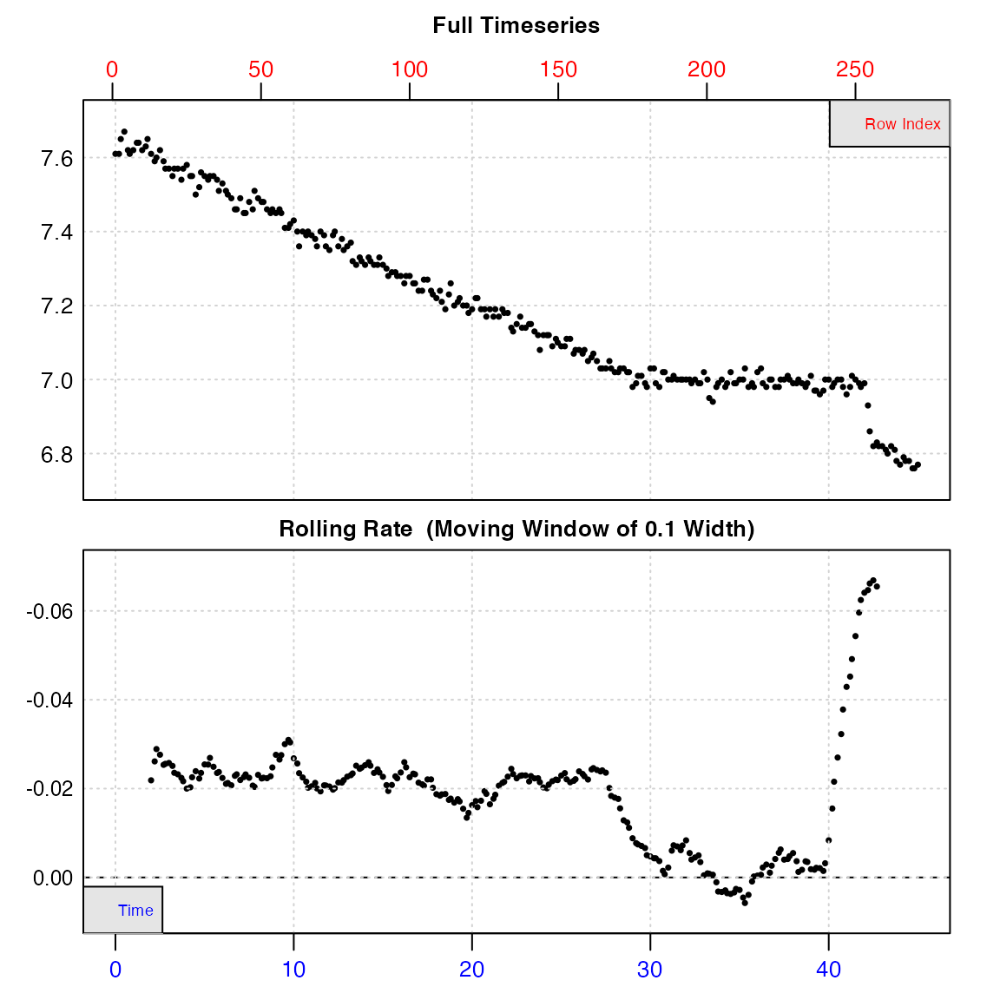
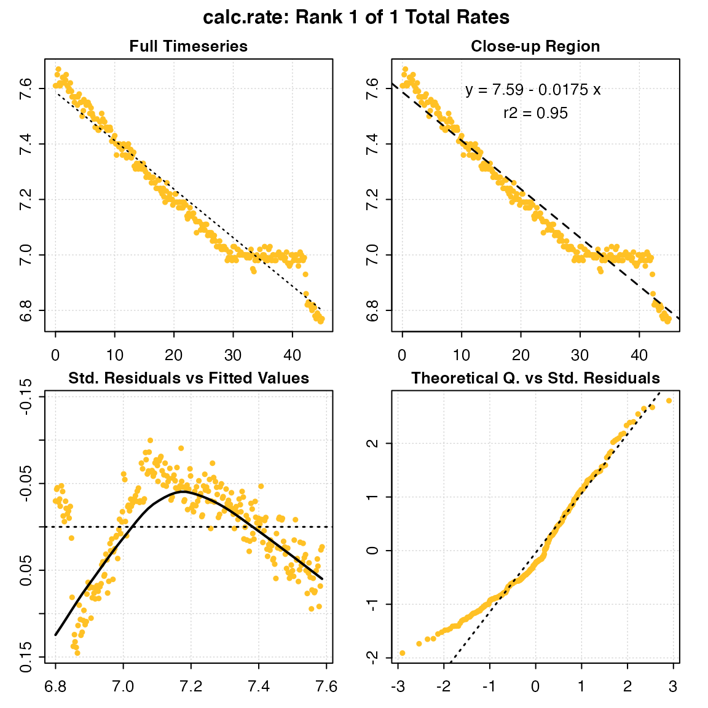
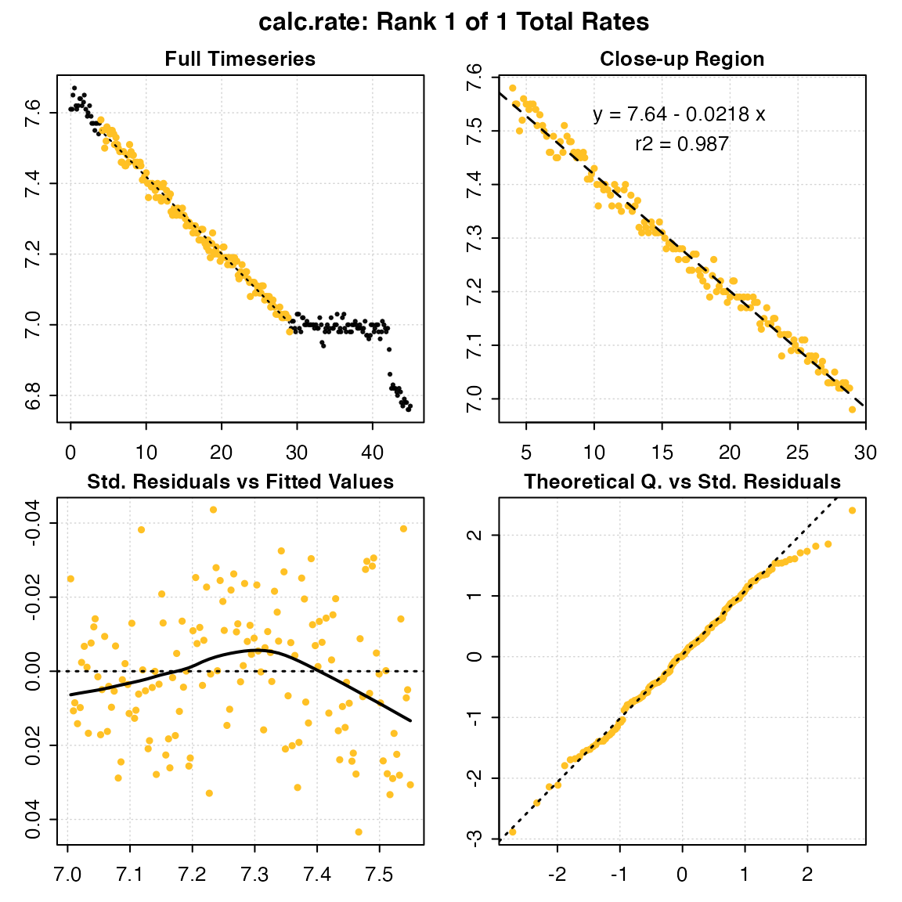

A typical respR workflow: Closed-chamber respirometry
Here we describe a typical workflow for a closed-chamber respirometry experiment. The example data used here is urchins.rd, where the first column of the data frame is time data, while the remaining 18 columns are dissolved \(O_2\) data. Columns 18 and 19 contain background respiration recordings. The units are minutes and mg/L of \(O_2\), however all analyses in respR are unitless, and we only consider units when we later come to convert rates.
head(urchins.rd)
#> time.min a b c d e f g h i j k l m
#> 1: 0.0 7.86 7.86 7.64 7.65 7.87 7.74 7.62 7.65 7.96 7.75 7.72 7.71 7.87
#> 2: 0.2 7.87 7.79 7.60 7.71 7.87 7.72 7.61 7.66 7.97 7.72 7.71 7.71 7.89
#> 3: 0.3 7.89 7.70 7.60 7.70 7.90 7.72 7.61 7.63 7.98 7.72 7.69 7.77 7.89
#> 4: 0.5 7.90 7.68 7.60 7.72 7.92 7.74 7.62 7.66 7.97 7.72 7.70 7.77 7.89
#> 5: 0.7 7.87 7.64 7.60 7.67 7.90 7.73 7.59 7.65 7.95 7.71 7.66 7.76 7.86
#> 6: 0.8 7.82 7.69 7.61 7.61 7.88 7.70 7.60 7.65 7.94 7.70 7.63 7.72 7.86
#> n o p b1 b2
#> 1: 7.61 6.96 7.04 7.90 7.70
#> 2: 7.61 6.96 7.01 7.89 7.70
#> 3: 7.65 6.97 7.05 7.90 7.69
#> 4: 7.67 6.96 7.09 7.89 7.69
#> 5: 7.62 6.95 7.00 7.90 7.68
#> 6: 7.61 6.94 6.99 7.90 7.67
1: Check for common errors - inspect()
We first use inspect() to prepare the data and to check for:
- Missing or non-numeric (
NA/NaN) data - Sequential time data
- Duplicate time data
- Evenly-spaced time data
By default, the function assumes the first column of the data frame is time, while the second column is oxygen. However, the time = and oxygen = arguments can modify that behaviour to select particular columns.
urchin <- inspect(urchins.rd, time = 1, oxygen = 15)#> inspect.ft: Data issues detected. For more information use print().
#>
#> # print.inspect # -----------------------
#> time.min n
#> NA/NAN pass pass
#> sequential pass -
#> duplicated pass -
#> evenly-spaced WARN -
#>
#> Uneven Time data locations (first 20 shown) in column: time.min
#> [1] 1 2 3 4 5 6 7 8 9 10 11 12 13 14 15 16 17 18 19 20
#> Minimum and Maximum intervals in uneven Time data:
#> [1] 0.1 0.2
#> -----------------------------------------#> Warning: Time values are not evenly-spaced (numerically).From the plot, we can see irregularities in these data near the end of the timeseries (in this case the specimen had interfered with the oxygen sensor). A linear regression of the entire data series would therefore give an erroneous calculation of the true rate. However, the bottom output plot shows that over the initial stages of the experiment, oxygen uptake (as determined by a rolling rate across 10% of the entire data) is consistent at around -0.02, and so in this experiment this section would be most suitable for analysis.
The function also warns us that time data is not numerically evenly-spaced. However, this does not mean the data cannot be processed. Rather than make assumptions that rows represent evenly spaced datapoints, the functions in respR use actual time values for analyses and calculations, and so even irregularly spaced data are analysed correctly. This warning is for information purposes only: it is to make the user aware that if they use row numbers for manual operations such as subsetting, the same width may not represent the same time period. For now, the data frame is saved as an object, urchin which contains the original data columns we selected coerced into a data frame, and various other metadata.
It should be noted that using inspect() is optional - the main functions in respR will readily accept regular R data structures (e.g. data frames, tibbles, vectors) as long as data are numeric and error-free. Running inspect() is a qualitative, exploratory step that highlights potential issues about the data before analysis. We use this particular example, with an obvious error towards the end, to illustrate the point that you should always visualise and explore your data before analysis. respR has been designed to make this easy.
Note there is an older version of this function called inspect_data() - this function has been deprecated, but kept in the package to maintain compatibility with older code. It will not be updated in the future, so users should use inspect().
2: Process background respiration - calc_rate.bg()
The presence of microorganisms may be a potential source of experimental bias, and we may want to account for background respiration rates during experiments. Since background rates typically account for a small percentage of experimental rates, these so-called “blank” experiments are routinely conducted alongside, or before and after main experiments, and often the rates are averaged across several datasets to obtain a more accurate estimate of the correction.
The function calc_rate.bg() is used to process background rate measurements, which must share the same units of time and oxygen data as the experiments they will be used to correct. It can also simultaneously process multiple background rate measurements, with the assumption that an average background rate will be applied. In urchins.rd, background respiration was recorded and saved in columns 18 and 19. We analyse the data using the specialised function calc_rate.bg() and save the output as an object.
bg <- calc_rate.bg(urchins.rd, time = 1, oxygen = 18:19)
#>
#> # plot.calc_rate.bg # -------------------
#> calc_rate.bg: Plotting all 2 background rates ...
#> -----------------------------------------
print(bg)
#>
#> # print.calc_rate.bg # ------------------
#> Background rate(s):
#> [1] -0.0007650013 -0.0009018607
#> Mean background rate:
#> [1] -0.000833431
#> -----------------------------------------This bg object contains both individual background rates for each data column entered ($bgrate), and an averaged rate ($mean) which, by default, will be used as the correction when this is applied later in adjust_rate.
3: Calculate oxygen uptake rate - calc_rate()
Calling the function calc_rate() on the inspect() object, with no additional arguments, will prompt the function to perform a linear regression on the entire data series.
calc_rate(urchin) # same as: calc_rate(urchin$df)
#>
#> # plot.calc_rate # ----------------------
#> calc_rate: Plotting rate from position 1 of 1 ...
#> -----------------------------------------
#>
#> # print.calc_rate # ---------------------
#> Rank 1 of 1 rates:
#> Rate: -0.01749242
#>
#> To see full results use summary().
#> -----------------------------------------Note how the function recognises the inspect() object, with no other inputs necessary. Alternatively, you can specify a data.frame object containing raw data, in which case the function will automatically consider the first column as time data, and the second column as oxygen data (if not in the first two columns, they should be processed via inspect() or otherwise put into this structure).
In many cases, there is a need to truncate or subset the data before rate is determined. For example, we may want to exclude initial stages of instability, determine rate over an exact period of time, or within a threshold of O2 concentrations. Equipment interference or other factors may cause irregularities in the data. We can work around such errors by specifying the data regions over which we are interested in determining the rate.
Based on the from and to arguments, a user may use calc_rate() to specify data ranges in one of four ways:
-
Time (
by = "time"): “What is the rate over a specific 25 minute period?” -
Oxygen (
by = "oxygen"): “What is the rate between oxygen saturation points of 95% and 80%?” -
Row (
by = "row"): “I’d like to determine rate between rows 11 and 273.” -
Proportion (
by = "proportion"): “What is the rate from 4/5ths (0.8) to half (0.5) of total oxygen consumed?”
We do not need to be overly precise; for oxygen and time if input values do not match exactly to a value in the data, the function will identify the closest matching values, rounded down, and use these for subsequent calculations.
Here we’ll select a 25 minute period before the interference occurred:
urch_rate <- calc_rate(urchin, from = 4, to = 29, by = "time")
#>
#> # plot.calc_rate # ----------------------
#> calc_rate: Plotting rate from position 1 of 1 ...
#> -----------------------------------------The saved object can be explored using generic R commands.
print(urch_rate)
#>
#> # print.calc_rate # ---------------------
#> Rank 1 of 1 rates:
#> Rate: -0.02177588
#>
#> To see full results use summary().
#> -----------------------------------------
summary(urch_rate)
#>
#> # summary.calc_rate # -------------------
#> Summary of all rate results:
#>
#> rank intercept_b0 rate_b1 rsq row endrow time endtime oxy endoxy
#> 1: 1 7.636454 -0.02177588 0.987 25 175 4 29 7.58 6.98
#> rate.2pt rate
#> 1: -0.024 -0.02177588
#> -----------------------------------------The rate can be seen as the second entry rate_b1, and other summary data and model coefficients are saved in the object. In this case the rsq is 0.99, so this appears to be a very good estimate of this urchin’s respiration rate.
The output also includes a rate_2pt. This is the rate determined by simple two-point calculation of difference in O2 divided by difference in Time. For almost all analyses, the rate_b1 should be used. See Two-point analyses for an explanation of this output and when it might be useful
Plotting the output provides a series of diagnostic plots of the data subset that was analysed.
plot(urch_rate)
#>
#> # plot.calc_rate # ----------------------
#> calc_rate: Plotting rate from position 1 of 1 ...
#> -----------------------------------------
4: Adjust for background respiration - adjust_rate()
Since background rate has been calculated in calc_rate.bg(), adjustment is straightforward using the function adjust_rate(). The rate input to be adjusted can be an object of class calc_rate or auto_rate, or any numeric value.
urch_rate_adj <- adjust_rate(urch_rate, bg)
#> adjust_rate: Rate adjustments applied using "mean" method.
#> Use print() or summary() on output for more info.
urch_rate_adj
#>
#> # print.adjust_rate # -------------------
#> NOTE: Consider the sign of the adjustment value when adjusting the rate.
#>
#> Adjustment was applied using the 'mean' method.
#>
#> Rank 1 of 1 adjusted rate(s):
#> Rate : -0.02177588
#> Adjustment : -0.000833431
#> Adjusted Rate : -0.02094245
#>
#> To see full results use summary().
#> -----------------------------------------A background correction can also be entered manually. Care should be taken to include the correct (typically negative) sign.
urch_rate_adj <- adjust_rate(urch_rate, -0.00083)
#> adjust_rate: Rate adjustments applied using "mean" method.
#> Use print() or summary() on output for more info.
urch_rate_adj
#>
#> # print.adjust_rate # -------------------
#> NOTE: Consider the sign of the adjustment value when adjusting the rate.
#>
#> Adjustment was applied using the 'mean' method.
#>
#> Rank 1 of 1 adjusted rate(s):
#> Rate : -0.02177588
#> Adjustment : -0.00083
#> Adjusted Rate : -0.02094588
#>
#> To see full results use summary().
#> -----------------------------------------For experiments where there is a quantified background input of oxygen, such as in open-tank respirometry, adjust_rate() can be used to correct rates using a positive background value.
urch_rate_adj <- adjust_rate(urch_rate, 0.002)
#> adjust_rate: Rate adjustments applied using "mean" method.
#> Use print() or summary() on output for more info.
urch_rate_adj
#>
#> # print.adjust_rate # -------------------
#> NOTE: Consider the sign of the adjustment value when adjusting the rate.
#>
#> Adjustment was applied using the 'mean' method.
#>
#> Rank 1 of 1 adjusted rate(s):
#> Rate : -0.02177588
#> Adjustment : 0.002
#> Adjusted Rate : -0.02377588
#>
#> To see full results use summary().
#> -----------------------------------------
5: Convert the results - convert_rate()
Note, that until this point respR has not required units of time or oxygen to be entered. Here, we convert calculated, unitless rates to specified output units.
For example, we may want to determine:
- Absolute metabolic rate - Total change in O2 per unit time within the chamber, that is whole animal or whole group metabolic rate
- Mass-specific metabolic rate - Rate of oxygen consumption (or production) per unit time per unit mass of the specimen
The function convert_rate() can be used to convert rate values to absolute or mass-specific values. This requires the units of the original data (o2.unit, time.unit), the volume of fluid in the chamber (in L), and for mass-specific rates the mass of the specimen (in kg).
Note: volume is volume of water in the respirometer, not the volume of the respirometer. That is, it represents the effective volume. A specimen occupies space in the respirometer, and so displaces some proportion of the water, which depending on its size might be significant and cause mis-estimates of respiration rates. Therefore the volume of water entered here should equal the total volume of the respirometer minus the volume of the specimen.
There are several approaches to determine the effective volume; calculating the specimen volume geometrically or via water displacement in a separate vessel, or calculated from the mass and density (e.g. for fish it is often assumed they have an equal density as water, that is ~1000 kg/m^3). Water volume could also be determined directly by pouring out the water at the end of the experiment, or by weighing the respirometer after the specimen has been removed. The respfun utilities package has several functions to assist with determining the effective volume.
For an example of absolute oxygen uptake rate, we can convert the output of calc_rate() to O2 consumed per hour:
convert_rate(urch_rate_adj,
o2.unit = "mg/L",
time.unit = "min",
output.unit = "mg/h",
volume = 1.09)
#> convert_rate: object of class `adjust_rate` detected. Converting all adjusted rates in '$rate.adjusted'.
#>
#> # print.convert_rate # ------------------
#> Rank 1 of 1 rates:
#>
#> Input:
#> [1] -0.02377588
#> [1] "mg/L" "min"
#> Converted:
#> [1] -1.554943
#> [1] "mgO2/hour"
#>
#> To see full results use summary().
#> -----------------------------------------We can also convert to a mass-specific rate by adding a mass and specifying a mass-specific output.unit:
convert_rate(urch_rate_adj,
o2.unit = "mgl-1",
time.unit = "m",
output.unit = "mg/s/kg",
volume = 1.09,
mass = 0.19)
#> convert_rate: object of class `adjust_rate` detected. Converting all adjusted rates in '$rate.adjusted'.
#>
#> # print.convert_rate # ------------------
#> Rank 1 of 1 rates:
#>
#> Input:
#> [1] -0.02377588
#> [1] "mg/L" "min"
#> Converted:
#> [1] -0.002273308
#> [1] "mgO2/sec/kg"
#>
#> To see full results use summary().
#> -----------------------------------------Note how a “fuzzy” string matching algorithm automatically recognises variations in base units, allowing natural, intuitive input of units. For example, "ml/s", "mL/sec", "milliliter/s", and "millilitre/second" are all equally identified as mL/s. Unit delimiters can be any combination of a space, dot (.), forward-slash (/), or the “per” unit (-1). Thus, "ml/kg", "mL / kg", "mL /kilogram", "ml kg-1" or "ml.kg-1" are equally recognised as mL/kg. For a reminder on what units are available to use, call unit_args(). Some units require temperature, salinity and atmospheric pressure to perform the conversion:
unit_args()
#> Note: A string-matching algorithm is used to identify units.
#> Example 1: These are recognised as the same: 'mg/L', 'mg/l', 'mg L-1', 'mg per litre', 'mg.L-1'
#> Example 2: These are recognised as the same: 'hour', 'hr', 'h'
#>
#> # Input Units # --------------------------------------
#> Oxygen concentration units should use SI units (`L` or `kg`) for the denominator.
#>
#> Oxygen Concentration or Pressure Units - Do not require t, S and P
#> [1] "mg/L" "ug/L" "mmol/L" "umol/L"
#> Oxygen Concentration or Pressure Units - Require t, S and P
#> [1] "mL/L" "mg/kg" "ug/kg" "mmol/kg" "umol/kg" "mL/kg" "%Air"
#> [8] "%O2" "Torr" "hPa" "kPa" "mmHg" "inHg"
#>
#> Volume units for use in flow rates in calc_rate.ft and convert_rate.ft
#> (e.g. as in 'ml/min', 'L/s', etc.)
#> [1] "uL" "mL" "L"
#>
#> Time units (for 'time.unit' or as part of 'flowrate.unit')
#> [1] "sec" "min" "hour" "day"
#>
#> Mass units
#> [1] "ug" "mg" "g" "kg"
#>
#> Area units
#> [1] "mm2" "cm2" "m2" "km2"
#>
#> # Output Units in 'convert_rate' & 'convert_rate.ft' #
#> Must be in correct order, with no special characters other than the separator:
#>
#> Absolute rates: O2/Time e.g. 'mg/sec', 'umol/min', 'mL/h'
#> Mass-specific rates: O2/Time/Mass e.g. 'mg/sec/ug', 'umol/min/g', 'mL/h/kg'
#> Area-specific rates: O2/Time/Area e.g. 'mg/sec/mm2', 'umol/min/cm2', 'mL/h/m2'
#>
#> Output Oxygen amount units
#> [1] "ug" "mg" "umol" "mmol" "mol" "mL"
#>
#> Output Time units
#> [1] "sec" "min" "hour" "day"
#>
#> Output Mass units for mass-specific rates
#> [1] "ug" "mg" "g" "kg"
#>
#> Output Area units for surface area-specific rates
#> [1] "mm2" "cm2" "m2" "km2"Summary
This is an example of a straightforward analysis of a closed-chamber respirometry experiment. This entire analysis can be documented and shared in only a few lines of code, making it easily reproducible if the original data file is included:
# import and inspect
urchin <- inspect(urchins.rd, time = 1, oxygen = 15)
# Background
bg <- calc_rate.bg(urchins.rd, time = 1, oxygen = 18:19)
# Specimen rate
urch_rate <- calc_rate(urchin, from = 4, to = 29, by = "time")
# Adjust rate
urch_rate_adj <- adjust_rate(urch_rate, bg)
# Convert to final rate units
urchin_MO2 <- convert_rate(urch_rate_adj,
o2.unit = "mgl-1",
time.unit = "m",
output.unit = "mg/s/kg",
volume = 1.09,
mass = 0.19)Using tidyverse practices (i.e. dplyr pipes), can reduce this even further:
urchins.rd %>% # With the data object,
inspect(1, 15) %>% # inspect, then
calc_rate(from = 4, to = 29, by = "time") %>% # calculate rate, then
print() %>%
adjust_rate(
calc_rate.bg(urchins.rd, time = 1,
oxygen = 18:19)) %>% # adjust bg rate, then
print() %>%
convert_rate(o2.unit = "mgl-1", time.unit = "m",
output.unit = "mg/s/kg", volume = 1.09, mass = 0.19) # convert units.